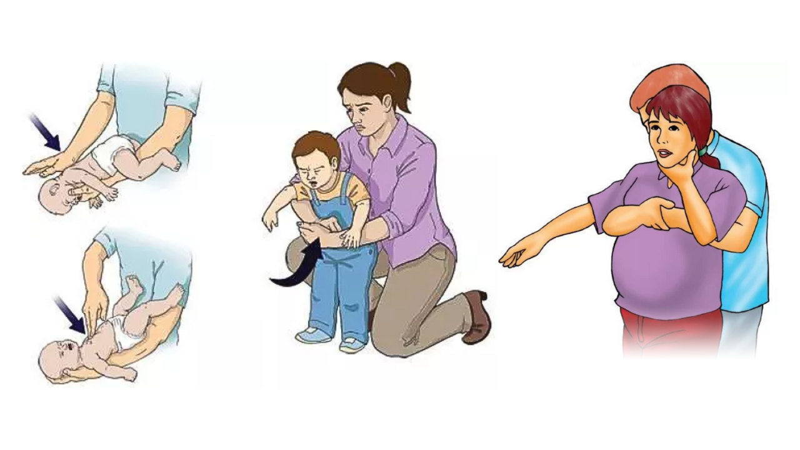

0 - 12 meses
Para a alimentação, se menor de 6 meses, o ideal é oferecer aleitamento materno exclusivo, sem água, chás ou outros alimentos, salvo orientação médica. Se a amamentação não for possível, utilize fórmula infantil prescrita pelo pediatra.
A partir dos 6 meses, introduza alimentos sólidos de forma gradual, mantendo o leite materno ou a fórmula. Ofereça frutas, legumes, verduras, cereais e proteínas em consistência adequada. Evite açúcar, mel (antes de 1 ano), refrigerantes, sucos industrializados e alimentos ultraprocessados.
Coloque o bebê para dormir de barriga para cima, tanto durante o dia quanto à noite, utilize colchão firme e berço seguro. Evite travesseiros, almofadas, protetores de berço, cobertores soltos e bichos de pelúcia dentro do berço. Mantenha um ambiente tranquilo e confortável.
Troque as fraldas sempre que estiverem sujas ou molhadas, dê banho diariamente ou conforme a necessidade. Higienize as mãos antes de cuidar do bebê.

1 - 3 anos
Ofereça uma alimentação variada com frutas, verduras, legumes, cereais, feijão, carnes, ovos e laticínios. Estabeleça horários regulares para as refeições. Incentive a criança a comer sozinha, respeitando seu ritmo. Evite refrigerantes, doces em excesso, salgadinhos e alimentos ultraprocessados. Ofereça água ao longo do dia.
Crianças entre 1 e 3 anos costumam precisar de 11 a 14 horas de sono por dia, incluindo cochilos. Mantenha uma rotina para dormir, com horários consistentes. Evite telas (celular, tablet e televisão) antes de dormir.
Escove os dentes pelo menos duas vezes ao dia com creme dental em pequena quantidade, adequado para a idade. Lave as mãos antes das refeições e após usar o banheiro ou trocar fraldas. Mantenha banho diário e unhas limpas e curtas.
Nunca deixe a criança sozinha perto de água, mesmo em pouca quantidade. Proteja tomadas, escadas e janelas. Guarde medicamentos, produtos de limpeza e objetos pequenos fora do alcance. Utilize cadeirinha adequada no carro. Supervisione brincadeiras o tempo todo.
Evite castigos físicos e gritos. Prefira orientar com calma e consistência. Brincar é uma das principais formas de aprendizagem nessa idade. Cada criança tem seu próprio ritmo de desenvolvimento; pequenas diferenças são esperadas. Se houver dúvidas sobre atrasos importantes na fala, na interação social ou no desenvolvimento motor, converse com o pediatra.
4 - 12 anos
A babá será responsável por garantir o bem-estar, a segurança e o conforto da criança durante todo o período em que estiver sob seus cuidados. Isso inclui supervisionar as atividades, oferecer alimentação conforme as orientações dos responsáveis, manter a higiene pessoal da criança, incentivar brincadeiras e atividades adequadas à sua idade, respeitar sua rotina de sono e zelar por um ambiente seguro. Em qualquer situação de emergência, alteração no estado de saúde ou ocorrência fora do comum, a babá deverá comunicar imediatamente os responsáveis e seguir as orientações previamente fornecidas.
Primeiros socorros
Os primeiros socorros em crianças consistem em prestar atendimento imediato até a chegada de ajuda especializada. Em casos de cortes, lave o local com água limpa, faça pressão com um pano ou gaze para conter o sangramento e mantenha o ferimento protegido. Em queimaduras, resfrie a área com água corrente por cerca de 20 minutos, sem usar gelo, pomadas ou produtos caseiros. Se a criança estiver engasgada, tossindo ou com dificuldade para respirar, procure ajuda imediatamente e aplique apenas as manobras adequadas para a idade, se você souber realizá-las. Em qualquer situação grave, como perda de consciência, dificuldade para respirar, convulsões ou sangramento intenso, acione o serviço de emergência (192 – SAMU) e mantenha a criança calma e segura até a chegada do atendimento.
Manobra de desengasgo (menores de 1 ano)
Em um bebê com menos de 1 ano que esteja engasgado e não consiga chorar, tossir ou respirar, a manobra de desengasgo consiste em alternar cinco tapas firmes nas costas com cinco compressões no peito. Primeiro, segure o bebê de bruços sobre o antebraço, mantendo a cabeça mais baixa que o tronco e sustentando a mandíbula. Aplique cinco tapas firmes entre as escápulas com a base da mão. Em seguida, vire o bebê cuidadosamente de barriga para cima, ainda com a cabeça mais baixa que o corpo, e faça cinco compressões no centro do peito, logo abaixo da linha dos mamilos, usando dois dedos. Continue alternando essas etapas até que o objeto seja expelido ou o bebê volte a respirar normalmente. Se o bebê perder a consciência ou não responder, acione imediatamente o serviço de emergência da sua região e inicie reanimação cardiopulmonar (RCP), se tiver treinamento, seguindo as orientações do atendimento de emergência.
Manobra de desengasgo (maiores de 1 ano)
Posicione-se atrás da criança. Se ela for pequena, ajoelhe-se para ficar na mesma altura. Incline a criança levemente para a frente. Dê até cinco golpes firmes entre as escápulas (entre os ombros) com a base da palma da mão. Se os golpes não resolverem, faça até cinco compressões abdominais (manobra de Heimlich): Fique atrás da criança. Passe os braços ao redor da cintura. Feche uma das mãos em punho e coloque-a logo acima do umbigo e abaixo do esterno. Segure o punho com a outra mão. Faça movimentos rápidos para dentro e para cima. Alterne cinco golpes nas costas e cinco compressões abdominais até que o objeto seja expelido ou a criança volte a respirar. Se a criança ficar inconsciente: Acione ou confirme o acionamento do serviço de emergência. Inicie a reanimação cardiopulmonar (RCP), se você tiver treinamento. Sempre que abrir a boca para verificar a via aérea, remova o objeto apenas se ele estiver claramente visível. Nunca faça uma varredura com os dedos às cegas, pois isso pode empurrar o objeto ainda mais para dentro.
